Cocina una vez
Prepara toda la semana sin renunciar al sabor ni a la salud.
Método de cocina por lotes
Deja de cocinar desde cero todas las semanas.
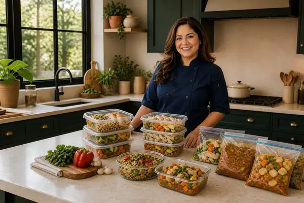
Más de 100 recetas de comidas saludables, listas y deliciosas para cocinar una vez y comer bien toda la semana.
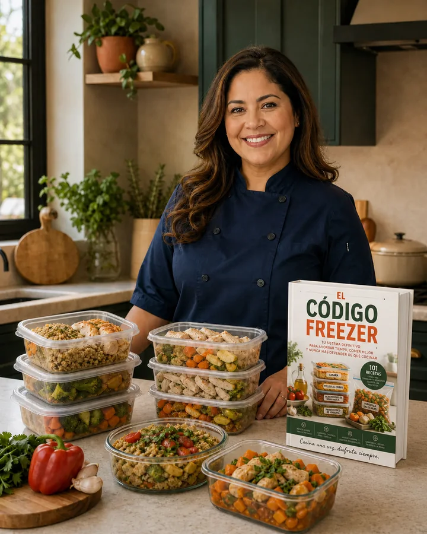
Prepara toda la semana sin renunciar al sabor ni a la salud.
Prácticas y congelables, sin perder textura ni valor nutricional.
Tabla por receta, con porción y rendimiento ya calculados.
Opciones señalizadas para elegir de inmediato.
Utensilios, etiquetas y almacenamiento profesional.
Planificación inteligente para ahorrar tiempo y dinero.
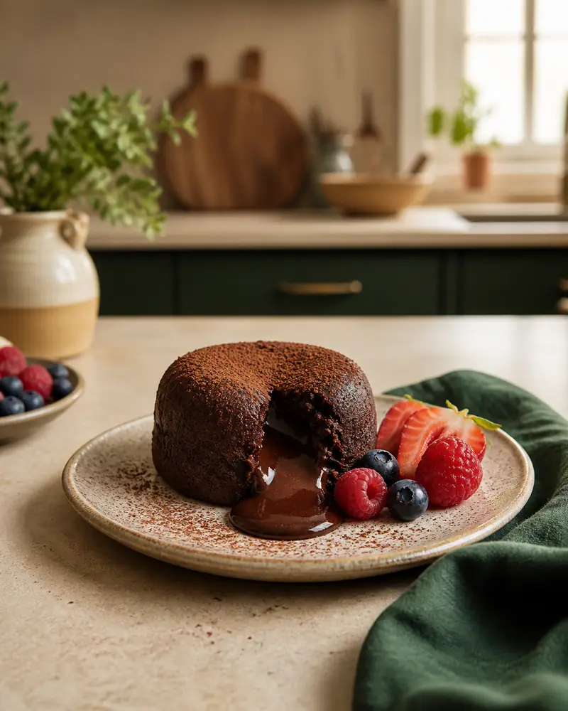
Lo que recibes en el método
Con las técnicas correctas, tu comida sale del congelador como si acabara de prepararse.
Recetas para el almuerzo, una cena rápida, un snack saludable o un postre sin culpa, organizadas por categoría.
Alto en proteína
Ligero
Para combinar
Prácticos
Versátiles
Sin culpa
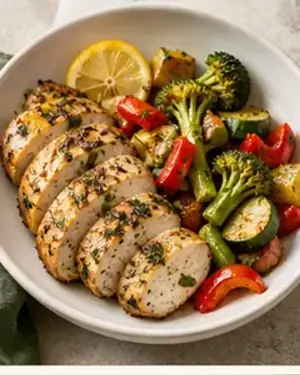
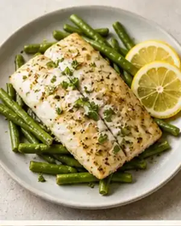
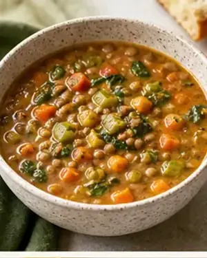
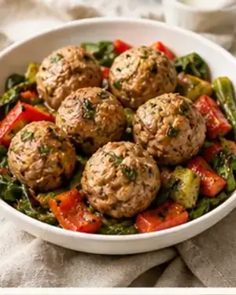
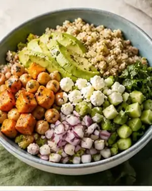
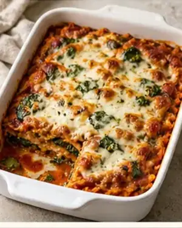
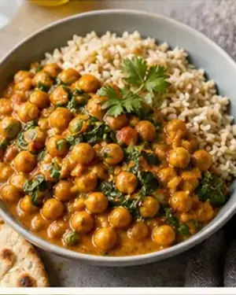
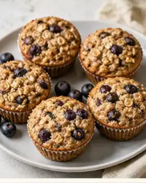
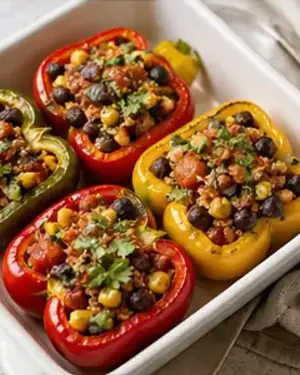
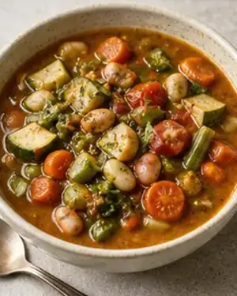
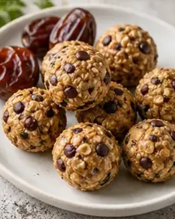
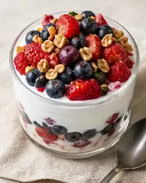
Valor: USD —
Valor: USD —
Valor: USD —
Los tres bonos se entregan junto con la edición completa.
Precios expresados en USD, acceso de por vida y garantía comercial de 7 días.
Edición esencial
Edición completa
+ Bonos incluidos
Contenido pendiente de autorización y verificación.
Contenido pendiente de autorización y verificación.
Contenido pendiente de autorización y verificación.
Contenido pendiente de autorización y verificación.
Contenido pendiente de autorización y verificación.
Contenido pendiente de autorización y verificación.
Después de confirmar el pago, recibes las recetas únicamente por correo electrónico.
No. Las recetas están pensadas para personas con poco tiempo o poca experiencia, con instrucciones claras y prácticas.
Incluyen calorías y macros, además de opciones low carb, sin gluten y sin lactosa señalizadas en el libro.
No. El método funciona con utensilios habituales y contiene una guía de envases y herramientas recomendadas.
Cada receta indica su tiempo máximo de congelación, generalmente entre 30 y 90 días.
Tienes 7 días de garantía comercial y puedes solicitar la devolución del valor pagado dentro de ese plazo.